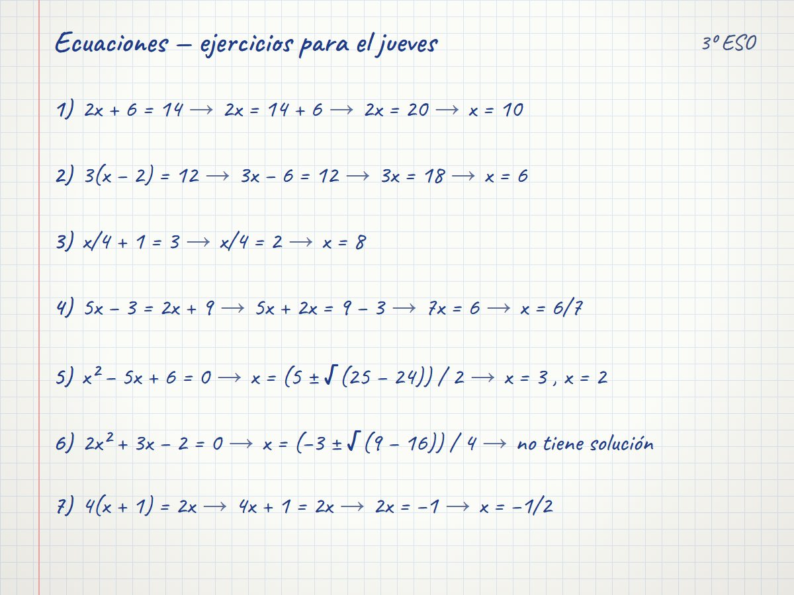

Asistente para familias y alumnos
Cuéntanos qué le pasa con los estudios.
- Leyendo lo que has escrito
- Buscando entre 23 profes revisados
- Comprobando horarios y distancia
Lo que he entendido
Corrector de deberes
Haz una foto a los deberes y te dice qué está bien, dónde falla y por qué.
Resuelve cada ejercicio desde cero, marca el paso exacto del fallo y lo explica paso a paso. Primero una pista, luego la solución, y puedes preguntarle tus dudas.

La foto no se guarda: se corrige y se borra. Más opciones: varias fotos, solo pistas, escribirlo a mano
Corrección
Pulsa «Corregir este ejemplo»
Plan de estudio
Un plan hasta el día del examen, semana a semana.
Pon la fecha y el tiempo que tiene. El plan reparte clases con el profe y rato de estudio solo, y deja la última semana para un simulacro.
clase con el profe estudio solo (1 h)
Resumen de cada clase
El profe habla 30 segundos. La familia recibe el resumen, en su idioma.
Al acabar, el profe graba una nota de voz. El asistente la convierte en un resumen claro: qué ha ido bien, qué cuesta y qué toca después.
Nota de voz de Laura · 0:28
Pulsa ▶ para escucharla.
Resumen para la familia
Ecuaciones de segundo grado
Ayuda entre clases
Le ayuda con los deberes sin hacérselos.
Pregunta, da pistas y espera a que el alumno piense. Usa los apuntes de su profe, y el profe ve en qué se ha atascado antes de la siguiente clase.
Lo que ve la familia
Lo que ve Laura, su profe
Todavía nada. Cuando practique, Laura verá dónde se ha atascado.
Precios
Sin cuotas. Solo pagas las clases.
Por buscar, escribir a profes y usar el asistente.
Nuestra comisión baja cuanto más tiempo seguís con el mismo profe.
Si la primera clase no encaja, te devolvemos el dinero.
Por alumno en grupos de estudio de cuatro, con alumnos de tu zona y del mismo curso.

Seguridad
El asistente ayuda. A los profes los revisan personas.
- Videollamada con cada profe y títulos comprobados antes de publicar su perfil.
- Certificado de delitos sexuales, obligatorio para dar clase a menores.
- Solo se ve el barrio, nunca la dirección. Con menores, los mensajes llegan a la familia.